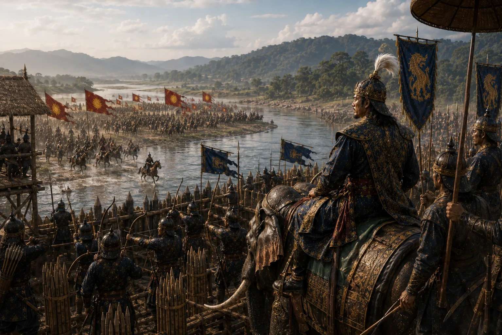

Battle of Pichala Against Koch Forces
1546–1547 · Swarganarayan’s kingdom

Suklenmung defends his kingdom against invading Koch commander Chilarai along the Pichala River, repulsing Koch forces with heavy losses.
Sources have not yet been catalogued for this record.
People: Chilarai (Sukladhwaj), Suklenmung (Garhgayan Roja)
Open this scene in the interactive archive · Follow this event on MAP